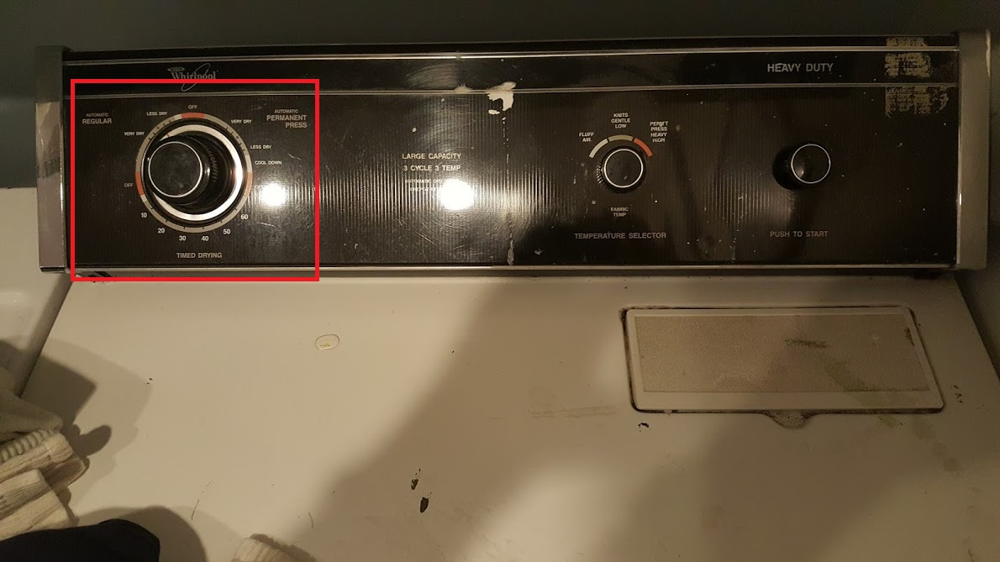
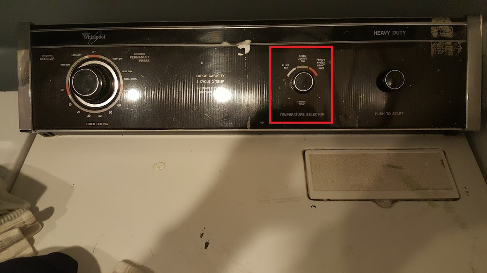
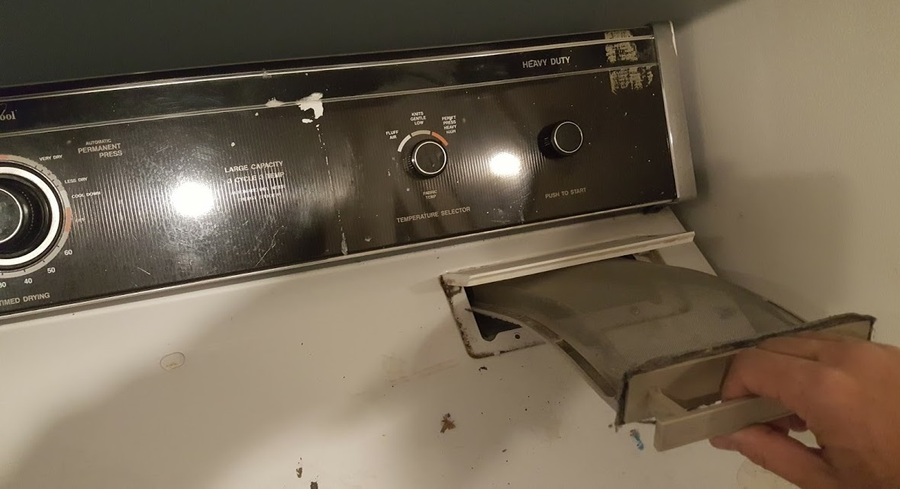

<header>
    <title>1209 Glen dryer</title>
</header>
<body bgcolor=#cccccc>
<font face=arial size=+6>
    <h4>1209 Glen dryer</h4>
    Choose how long you want the dryer to run:<br><br>
    Select the temperature you prefer -- <ul><li>"fluff air" = "not very hot"</li><li>"knits gentle" = "hotter"</li><li>"heavy high" = "hottest"</li></ul><br>
    Depress the start button:<br><br>
    Occasionally clean the lint screen:<br><br>

<hr>
contact Nelson:<br>
<a href='mailto:nelson.sproul@gmail.com'>nelson.sproul@gmail.com</a><br>
<a href='tel:2096777685'>(209)677-7685</a><br>
<hr>
contact Deirdre:<br>
<a href='mailto:dvsproul@gmail.com'>dvsproul@gmail.com</a><br>
<a href='tel:4153706422'>(415)370-6422</a><br>
<hr>
from the City of Berkeley:<br>
<a href='https://www.cityofberkeley.info/uploadedFiles/Planning_and_Development/Level_3_-_Land_Use_Division/ShortTermRentalGuestRequirements.pdf'>short-term rental guest requirements</a><br>
<hr>
<a href='index.html'>Home</a>
